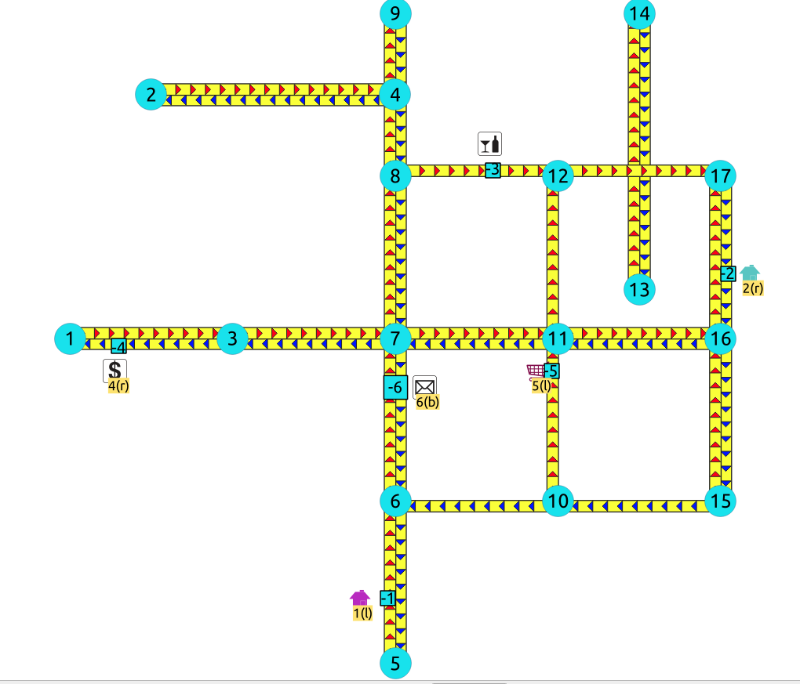

withPoints - Familia de funciones¶
Cuando los puntos también se dan como entrada:
Advertencia
Funciones propuestas para la próxima versión mayor.
No están oficialmente en la versión actual.
Es probable que oficialmente formen parte del próximo lanzamiento:
Las funciones hacen uso de ANY-INTEGER y ANY-NUMERICAL
Es posible que el nombre no cambie. (Pero todavía puede)
Es posible que la firma no cambie. (Pero todavía puede)
Es posible que la funcionalidad no cambie. (Pero todavía puede)
Se han hecho pruebas con pgTap. Pero tal vez se necesiten más.
Es posible que la documentación necesite un refinamiento.
pgr_withPoints - Proposed - Ruta desde/hacia puntos en cualquier parte del grafo.
pgr_withPointsCost - Proposed - Costos de las tutas más cortas.
pgr_withPointsCostMatrix - proposed - Costos de las rutas más cortas.
pgr_withPointsKSP - Propuesto - rutas más cortas K.
pgr_withPointsDD - Proposed - Distancia de conducción.
pgr_withPointsVia - Proposed - Via routing
Introducción¶
This family of functions belongs to the withPoints - Category and the functions that compose them are based one way or another on dijkstra algorithm.
Depending on the name:
pgr_withPoints is pgr_dijkstra with points
pgr_withPointsCost is pgr_dijkstraCost with points
pgr_withPointsCostMatrix is pgr_dijkstraCostMatrix with points
pgr_withPointsKSP is pgr_ksp with points
pgr_withPointsDD is pgr_drivingDistance with points
pgr_withPointsvia is pgr_dijkstraVia with points
Parameters¶
Column |
Type |
Description |
|---|---|---|
|
Edges SQL as described below |
|
|
Points SQL as described below |
|
|
Combinations SQL as described below |
|
start vid |
|
Identifier of the starting vertex of the path. Negative value is for point’s identifier. |
start vids |
|
Array of identifiers of starting vertices. Negative values are for point’s identifiers. |
end vid |
|
Identifier of the ending vertex of the path. Negative value is for point’s identifier. |
end vids |
|
Array of identifiers of ending vertices. Negative values are for point’s identifiers. |
Optional parameters¶
Column |
Type |
Default |
Description |
|---|---|---|---|
|
|
|
|
With points optional parameters¶
Parameter |
Type |
Default |
Description |
|---|---|---|---|
|
|
|
Value in [
|
|
|
|
|
Inner Queries¶
Edges SQL¶
Column |
Type |
Default |
Description |
|---|---|---|---|
|
ANY-INTEGER |
Identifier of the edge. |
|
|
ANY-INTEGER |
Identifier of the first end point vertex of the edge. |
|
|
ANY-INTEGER |
Identifier of the second end point vertex of the edge. |
|
|
ANY-NUMERICAL |
Weight of the edge ( |
|
|
ANY-NUMERICAL |
-1 |
Weight of the edge (
|
Where:
- ANY-INTEGER:
SMALLINT,INTEGER,BIGINT- ANY-NUMERICAL:
SMALLINT,INTEGER,BIGINT,REAL,FLOAT
Points SQL¶
Parameter |
Type |
Default |
Description |
|---|---|---|---|
|
ANY-INTEGER |
value |
Identifier of the point.
|
|
ANY-INTEGER |
Identifier of the «closest» edge to the point. |
|
|
ANY-NUMERICAL |
Value in <0,1> that indicates the relative postition from the first end point of the edge. |
|
|
|
|
Value in [
|
Where:
- ANY-INTEGER:
SMALLINT,INTEGER,BIGINT- ANY-NUMERICAL:
SMALLINT,INTEGER,BIGINT,REAL,FLOAT
Combinations SQL¶
Parameter |
Type |
Description |
|---|---|---|
|
ANY-INTEGER |
Identifier of the departure vertex. |
|
ANY-INTEGER |
Identifier of the arrival vertex. |
Where:
- ANY-INTEGER:
SMALLINT,INTEGER,BIGINT
Advanced Documentation¶
About points¶
For this section the following city (see Datos Muestra) some interesing points such as restaurant, supermarket, post office, etc. will be used as example.

The graph is directed
Red arrows show the
(source, target)of the edge on the edge tableBlue arrows show the
(target, source)of the edge on the edge tableEach point location shows where it is located with relation of the edge
(source, target)On the right for points 2 and 4.
On the left for points 1, 3 and 5.
On both sides for point 6.
The representation on the data base follows the Points SQL description, and for this example:
SELECT pid, edge_id, fraction, side FROM pointsOfInterest;
pid | edge_id | fraction | side
-----+---------+--------------------+------
1 | 1 | 0.4 | l
4 | 6 | 0.3 | r
3 | 12 | 0.6000000000000001 | l
2 | 15 | 0.3999999999999999 | r
5 | 5 | 0.8 | l
6 | 4 | 0.7 | b
(6 rows)
Driving side¶
In the the folowwing images:
The squared vertices are the temporary vertices,
The temporary vertices are added according to the driving side,
visually showing the differences on how depending on the driving side the data is interpreted.
Lado de conducción derecho¶

Point 1 located on edge
(6, 5)Point 2 located on edge
(16, 17)Point 3 located on edge
(8, 12)Point 4 located on edge
(1, 3)Point 5 located on edge
(10, 11)Point 6 located on edges
(6, 7)and(7, 6)
Lado de conducción izquierdo¶
{kind=link}
Point 1 located on edge
(5, 6)Point 2 located on edge
(17, 16)Point 3 located on edge
(8, 12)Point 4 located on edge
(3, 1)Point 5 located on edge
(10, 11)Point 6 located on edges
(6, 7)and(7, 6)
Driving side does not matter¶
Like having all points to be considered in both sides
bPrefered usage on undirected graphs
On the TRSP - Familia de funciones this option is not valid

Point 1 located on edge
(5, 6)and(6, 5)Point 2 located on edge
(17, 16)``and ``16, 17Point 3 located on edge
(8, 12)Point 4 located on edge
(3, 1)and(1, 3)Point 5 located on edge
(10, 11)Point 6 located on edges
(6, 7)and(7, 6)
Creating temporary vertices¶
This section will demonstrate how a temporary vertex is created internally on the graph.
Problem
For edge:
SELECT id, source, target, cost, reverse_cost
FROM edges WHERE id = 15;
id | source | target | cost | reverse_cost
----+--------+--------+------+--------------
15 | 16 | 17 | 1 | 1
(1 row)
insert point:
SELECT pid, edge_id, fraction, side
FROM pointsOfInterest WHERE pid = 2;
pid | edge_id | fraction | side
-----+---------+--------------------+------
2 | 15 | 0.3999999999999999 | r
(1 row)
En una red de conducción del lado derecho¶
Lado de conducción derecho
Arrival to point
-2can be achived only via vertex 16.Does not affects edge
(17, 16), therefore the edge is kept.It only affects the edge
(16, 17), therefore the edge is removed.Create two new edges:
Edge
(16, -2)with cost0.4(original cost * fraction == \(1 * 0.4\))Edge
(-2, 17)with cost0.6(the remaing cost)
The total cost of the additional edges is equal to the original cost.
If more points are on the same edge, the process is repeated recursevly.
En una red de conducción del lado izquierdo¶
Lado de conducción izquierdo
Arrival to point
-2can be achived only via vertex 17.Does not affects edge
(16, 17), therefore the edge is kept.It only affects the edge
(17, 16), therefore the edge is removed.Create two new edges:
Work with the original edge
(16, 17)as the fraction is a fraction of the original:Edge
(16, -2)with cost0.4(original cost * fraction == \(1 * 0.4\))Edge
(-2, 17)with cost0.6(the remaing cost)If more points are on the same edge, the process is repeated recursevly.
Flip the Edges and add them to the graph:
Edge
(17, -2)becomes(-2, 16)with cost0.4and is added to the graph.Edge
(-2, 16)becomes(17, -2)with cost0.6and is added to the graph.
The total cost of the additional edges is equal to the original cost.
Cuando el lado de conducción no importa¶
Arrival to point
-2can be achived via vertices 16 or 17.Affects the edges
(16, 17)and(17, 16), therefore the edges are removed.Create four new edges:
Work with the original edge
(16, 17)as the fraction is a fraction of the original:Edge
(16, -2)with cost0.4(original cost * fraction == \(1 * 0.4\))Edge
(-2, 17)with cost0.6(the remaing cost)If more points are on the same edge, the process is repeated recursevly.
Flip the Edges and add all the edges to the graph:
Edge
(16, -2)is added to the graph.Edge
(-2, 17)is added to the graph.Edge
(16, -2)becomes(-2, 16)with cost0.4and is added to the graph.Edge
(-2, 17)becomes(17, -2)with cost0.6and is added to the graph.
Ver también¶
Índices y tablas